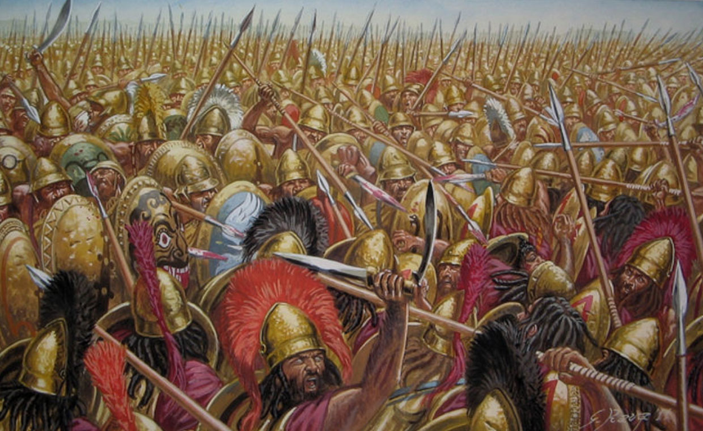

The Battle of Leuctra (c. 371 BCE)

The Battle of Leuctra took place on July 6, 371 BCE, in Boeotia, Greece. It was fought between Thebes and Sparta and became one of the most important battles in ancient Greek history. Thebes wanted to protect its independence and its alliance with other Boeotian city-states, while Sparta aimed to maintain its control over Greece. The Theban victory ended Sparta's long period of military dominance and established Thebes as the leading power among the Greek city-states.
The Spartan army, led by King Cleombrotus, had approximately 12,000 soldiers, while the Thebans and their allies had a smaller force. Despite being outnumbered, the Theban general Epaminondas developed an unusual battle strategy to overcome the experienced Spartan army. Instead of spreading his soldiers evenly across the battlefield, he concentrated his strongest troops on the left side of his formation. This created a much deeper line of soldiers in that area, allowing the Thebans to strike the Spartan forces with greater strength.
The Theban Sacred Band, an elite unit of 300 soldiers commanded by Pelopidas, played an important role in the attack. Supported by the rest of the concentrated force, the Thebans broke through the Spartan right flank. King Cleombrotus and many of his experienced soldiers were killed during the fighting. The remaining Spartan troops eventually retreated, suffering heavy losses. The Thebans lost around 300 men, while the Spartans lost approximately 1,000.
The defeat damaged Sparta's reputation and weakened its control over other Greek city-states. Many of its allies and dependent communities began to question its authority, while Thebes gained greater political and military influence. The battle also demonstrated how new battlefield strategies could defeat a traditionally powerful army.
Epaminondas's tactics later influenced other military leaders, including Philip II of Macedon, who was present in the Theban sphere of influence during this period. Philip later used similar strategic ideas, which also influenced his son, Alexander the Great. The Battle of Leuctra therefore marked a major turning point in Greek history and showed that Sparta was no longer invincible.